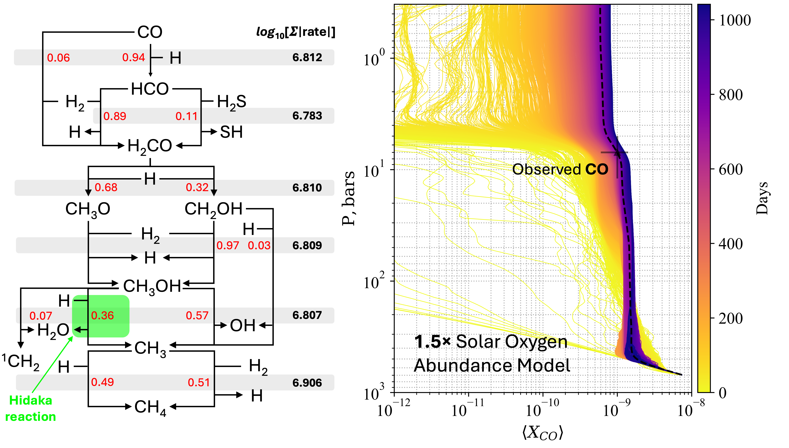

Planetary Atmospheres
Gas Giant Planets • Terrestrial Planets
Jupiter's deep water abundance has remained one of the longest-standing mysteries in planetary science because its thick clouds
hide water from direct observation. To probe beneath these clouds, I developed the first framework coupling detailed
1D Chemical Kinetic-transport Modeling
with 2D Hydrodynamic Modeling,
bringing atmospheric chemistry, transport, and cloud microphysics together within a unified model. The chemical model is augmented by automated chemical network generation using
RMG and systematically revisits assumptions
inherited by traditional 1D models, including the exclusion of important pathways such as the Hidaka reaction and the use of inaccurate database rate coefficients. The resulting framework provides one of the
most comprehensive and chemically rigorous descriptions of Jupiter's deep atmosphere to date.
Using observed CO as a window into the deep atmosphere, our model constrains Jupiter to approximately
1.5× Solar Oxygen Abundance and predicts substantially slower atmospheric mixing than traditionally assumed. These results help resolve a decades-long debate over Jupiter's oxygen inventory and
provide new clues to how and where Jupiter formed, offering a deeper window into the formation of our Solar System.
The work was featured in an official University of Chicago press release and received broad coverage from multiple science news outlets.